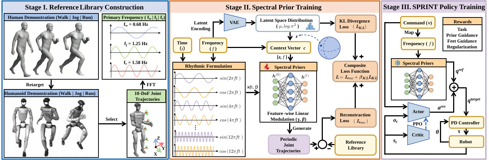

The pursuit of highly dynamic humanoid sprinting is currently hindered by a scarcity of humanoid-viable kinematic reference data and the inability of existing frameworks to maintain stability during sprints. To overcome these limitations, this paper introduces SPRINT, a novel framework driven by highly efficient, frequency-adaptive spectral priors. By characterizing the fundamental periodicity of human locomotion in the frequency domain using a reference library of exactly five discrete motion sequences, these priors generate kinematically feasible joint trajectories across a broad velocity spectrum, successfully extrapolating far beyond the reference distribution. Guided by these pretrained priors, the SPRINT policy achieves zero-shot sim-to-real transfer in field experiments on the 1.3 m Humanoid Robot platform, reaching a peak sprinting velocity of 6\,m/s and demonstrating seamless gait transitions while preserving biomimetic naturalness. Ultimately, this work establishes frequency-adaptive spectral priors as a highly data-efficient foundation for humanoid athletic sprints.
